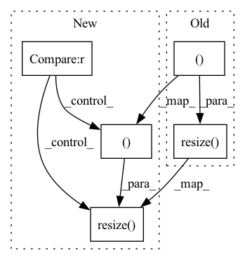

Pattern ID :5207
Before Change
if self._heatmap_publisher is not None and self._heatmap_publisher.get_num_connections() > 0:
heatmap_np = prediction.numpy()
heatmap_o = self._colors[heatmap_np]
heatmap_o = cv2.resize( np.uint8(heatmap_o), (960, 720 ))
self._heatmap_publisher.publish(self._bridge.to_ros_image(Image(heatmap_o), encoding="bgr8"))
except Exception:
rospy.logwarn("Failed to generate prediction.")After Change
self.heatmap_publisher.publish(self.bridge.to_ros_image(heatmap))
// Publish heatmap color visualization blended with the input image and a class color legend
if self.visualization_publisher is not None :
heatmap_colors = Image(self.colors[heatmap.numpy()])
image = Image(cv2.resize( image.convert("channels_last", "bgr"), (960, 720 )) )
alpha = 0.4 // 1.0 means full input image, 0.0 means full heatmap
beta = (1.0 - alpha)
image_blended = cv2.addWeighted(image.opencv(), alpha, heatmap_colors.opencv(), beta, 0.0)In pattern: SUPERPATTERN
Frequency: 3
Non-data size: 5
Instances Fragment ID: 18350876
Project Name: opendr-eu/opendr
Commit Name: f71fb87f1d6570e732564b2cccde3bc15e958c65
Time: 2022-09-01
Author: 27914645+tsampazk@users.noreply.github.com
File Name: projects/opendr_ws/src/perception/scripts/semantic_segmentation_bisenet.py
M Class Name: BisenetNode
N Class Name: BisenetNode
M Method Name: callback(2)
N Method Name: callback(2)
M Parent Class:
N Parent Class:
M File Name: projects/opendr_ws/src/perception/scripts/semantic_segmentation_bisenet.py
N File Name: projects/opendr_ws/src/perception/scripts/semantic_segmentation_bisenet.py
M Start Line: 70
M End Line: 87
N Start Line: 80
N End Line: 110
Before Change
for scale_ratio in [1.0, 0.9, 0.8, 0.7, 0.6]:
for scale_factor in [2, 3, 4]:
// Process HR image
hr_image = raw_image.resize( (int(raw_image.width * scale_ratio), int(raw_image.height * scale_ratio) ), Image.BICUBIC)
// Process LR image
lr_image = hr_image.resize([hr_image.width // scale_factor, hr_image.height // scale_factor], Image.BICUBIC)
lr_image = lr_image.resize([hr_image.width, hr_image.height], Image.BICUBIC)
// Save all imagesAfter Change
for flip_prob in [0.0, 1.0]:
for scale_factor in [2, 3, 4]:
// Process HR image
hr_image = raw_image.resize( (int(raw_image.width * scale_ratio), int(raw_image.height * scale_ratio) ), Image.BICUBIC) if scale_ratio != 1.0 else raw_image
hr_image = hr_image.rotate(rotate_angle) if rotate_angle != 0 else hr_image
hr_image = hr_image.transpose(Image.FLIP_LEFT_RIGHT) if flip_prob != 0.0 else hr_image
// Process LR image Fragment ID: 18350877
Project Name: lornatang/vdsr-pytorch
Commit Name: f0608433941333ab9b46509eb4b84eccd6d92dd9
Time: 2021-11-24
Author: liuchangyu1111@gmail.com
File Name: scripts/prepare_dataset.py
M Class Name: AnonimousClass
N Class Name: AnonimousClass
M Method Name: main(0)
N Method Name: main(0)
M Parent Class:
N Parent Class:
M File Name: scripts/prepare_dataset.py
N File Name: scripts/prepare_dataset.py
M Start Line: 47
M End Line: 58
N Start Line: 44
N End Line: 62
Before Change
for scale_ratio in [1.0, 0.9, 0.8, 0.7, 0.6]:
for rotate_angle in [0, 90, 180, 270]:
// Process HR image
new_image = raw_image.resize( (int(raw_image.width * scale_ratio), int(raw_image.height * scale_ratio) ), Image.BICUBIC)
new_image = new_image.rotate(rotate_angle, expand=True)
new_image.save(f"{raw_image_dir}/{file_name.split(".")[-2]}_{index:04d}.{file_name.split(".")[-1]}")
index += 1
After Change
for scale_ratio in [1.0, 0.9, 0.7, 0.5]:
for rotate_angle in [0, 90, 180]:
// Process HR image
hr_image = raw_image.resize( (int(raw_image.width * scale_ratio), int(raw_image.height * scale_ratio) ), Image.BICUBIC) if scale_ratio != 1.0 else raw_image
hr_image = hr_image.rotate(rotate_angle) if rotate_angle != 0 else hr_image
// Save all images
hr_image.save(f"{raw_image_dir}/{file_name.split(".")[-2]}_{index:04d}.{file_name.split(".")[-1]}") Fragment ID: 18350878
Project Name: lornatang/fsrcnn-pytorch
Commit Name: 3ca16ade7f47f7be7a1c6c590a70a15661673a4c
Time: 2021-11-25
Author: liuchangyu1111@gmail.com
File Name: scripts/prepare_dataset.py
M Class Name: AnonimousClass
N Class Name: AnonimousClass
M Method Name: main(0)
N Method Name: main(1)
M Parent Class:
N Parent Class:
M File Name: scripts/prepare_dataset.py
N File Name: scripts/prepare_dataset.py
M Start Line: 22
M End Line: 42
N Start Line: 34
N End Line: 61